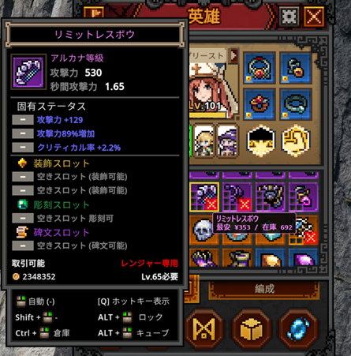

【TBH】タスクバーヒーロー向け「TBH Market Overlay」開発記——インベントリ上でSteam最安値を即表示する価格オーバーレイ
公開日: 2026年6月24日 | カテゴリ: ツール開発 / タスクバーヒーロー / C#
「この装備、売る？ 錬金する？」——マーケット再開後に浮上した"価格確認地獄"
放置系ハクスラRPG『TBH: Task Bar Hero（タスクバーヒーロー）』。タスクバーの極小ウィンドウで回し続けるだけでレア装備が雪だるま式に溜まっていく快感は、一度味わうとやめられません。2026年6月25日、約2週間停止していたSteamコミュニティマーケットへの新規出品が再開され、取引需要は再び一気に活性化しました。
しかし、実際にプレイしていると毎回こんな判断が発生します。「このアルカナ武器、マーケットに出した方がいい？ それとも錬金素材に回す？」「似た装備が何個もあるけど、どれを残すべき？」——答えを出すにはSteamマーケットの最安値と在庫数を知る必要があります。ところがゲーム本体には相場表示機能がなく、ブラウザでマーケットを開き、アイテム名を検索し、価格を確認し、またゲームに戻る……。この往復を1アイテムごとに繰り返すのは、インベントリ整理のたびに地味なストレスになります。
攻略Wikiを運営しながら毎日TBHを回していた筆者も、まさにこの"価格確認地獄"にハマっていました。だから作ったのが、非公式の価格表示オーバーレイツール「TBH Market Overlay」です。

TBH Market Overlayとは——マウスオーバーだけで相場が見える
TBH Market Overlayは、Task Bar Heroのプレイ中にインベントリのアイテムへカーソルを合わせるだけで、その装備のSteamマーケット最安値と出品在庫数を、ゲーム画面の上に重ねて表示するWindows向け常駐ツールです。
上のスクリーンショットの例では、アルカナ等級の弓「リミットレスボウ」のツールチップ横に「最安 ¥353 / 在庫 692」と表示されています。ゲーム内の詳細パネルでステータスを確認しながら、同時に"売却したらいくらになるか"がその場でわかる——これが本ツールの核心です。
主な機能
- マウスオーバー即表示： アイテム名を認識し、最安値・在庫数をリアルタイムにオーバーレイ
- レアリティ対応： レジェンダリー、アルカナ、イモータルなど等級ごとに正しいマーケット価格を判定
- 多言語対応： 日本語 / 英語UI切り替え（価格は円・USD表示）
- インストール不要： exeをダブルクリックするだけ。Python等の追加セットアップは不要
- 軽量・非侵襲： ゲームプロセスへのメモリ書き込みや描画介入は一切行わない
開発の裏側——「画面を読む」だけの安全な設計
TBHには厳格なアンチチートが存在し、RTSSやAutoHotkeyなど一般的なオーバーレイ・自動化ツールまで誤検知される事例が報告されています。ツール開発にあたって最優先したのは、「ゲームに一切触れない」という設計原則でした。
アイテム名の認識——Windows OCR
ゲームは外部APIを公開していないため、アイテムの特定にはWindows標準のOCR（光学文字認識）を採用しています。プレイヤーがアイテムにカーソルを合わせると表示されるツールチップの名称テキストを画面から読み取り、内部データベースと照合してマーケット価格を引き当てます。
OCRの性質上、ゲーム内言語設定によって認識精度が変わります。うまく動作しない場合は、ゲーム内言語を英語に設定すると改善するケースが多いです（アイテム名のフォント・文字列長の都合）。
価格データ——Steamマーケットの公開情報
表示される最安値・在庫数は、Steamコミュニティマーケットが公開している価格情報をもとに取得しています。初回起動時にデータの準備（数分程度）が走り、その後は「価格を更新」ボタンでいつでも最新の相場に追随できます。
なお、表示価格はあくまで参考値です。マーケットの出品制限（2026年6月再開後は出品枠4・8時間間隔・上位3グレード制限など）により、実際の取引価格は変動します。出品前には必ずSteamマーケット画面でも最終確認してください。
チートではない理由
本ツールが行うのは以下の2点のみです。
- 自分の画面を読み取る（OCR）
- Steamの公開データを参照して価格を表示する
メモリ読み取り、ゲームファイルの改変、ゲーム内描画への注入、自動操作——これらは一切行いません。DiscordやOBSのオーバーレイと同じ"画面の上に情報を重ねる"仕組みであり、ゲームの公平性やプレイデータには影響しません。
使い方（3ステップ）
ダウンロードはPatreonの配布ページ（TBH Market Overlay）から無料で取得できます。
- exeをダブルクリックして起動——TBH Market Overlayを立ち上げます
- 初回のみデータ準備を待つ——価格データベースの構築に数分かかります
- ゲームでアイテムにカーソルを合わせる——最安値と在庫数がオーバーレイ表示されます
動作要件は Windows 10 / 11（64bit）、Task Bar Hero インストール済み、インターネット接続、および使用言語のWindows OCR言語パックです。
マーケット再開後の"売買判断"を、その場で完結させる
TBHのSteamマーケット連携は、放置ゲームの枠を超えた経済体験です。CosmicやDivine、そして再開後に再び活況を見せるアルカナ・イモータル装備——どれを倉庫に残し、どれを交易船経由でSteamインベントリへ送るか。1個1個の判断が積み重なって、長期的な収益に直結します。
TBH Market Overlayは、その判断に必要な「今、このアイテムはいくらで売れるか」という情報を、ブラウザを開かずにゲーム画面の上で即座に届けるためのツールです。攻略Wiki運営者として日々TBHコミュニティの声を見ているからこそ、「相場確認の手間を1クリック削りたい」というニーズに応える形で生まれました。
ダウンロードは完全無料です。Patreonの配布ページから「TBH Market Overlay.zip」を取得できます。使い方・注意事項はタスクバーヒーロー攻略Wikiのマーケット章もあわせてご覧ください。ツールが役に立った場合は、Patreonメンバーシップでの開発支援も歓迎しています。
まとめ
タスクバーヒーローのSteamマーケット取引は、2026年6月の再開以降、再びゲーム体験の大きな柱になっています。しかし相場確認の手間は依然としてプレイヤーの負担です。TBH Market Overlayは、OCRとSteam公開データだけを使った非侵襲的なオーバーレイとして、その摩擦を取り除くことを目指しました。
「売るべきか、錬金すべきか」——次にインベントリがパンパンになったとき、ブラウザを開く前にカーソルを乗せるだけで答えが見える体験を、ぜひ試してみてください。